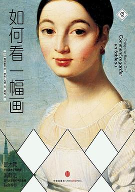

《如何看一幅画》

总体观点
法国卢浮宫学院资深讲师弗朗索瓦丝·芭布-高尔享誉国际的艺术观赏入门宝典。全书彻底打破艺术史晦涩难懂的学术考据与年代背诵，直面普通大众走进美术馆面对名画时的真实迷茫。
核心方法论：开创‘第一眼直觉反应→细节线索侦破→历史与情感深度共鸣’的三步解码路径。以问题为导向，化身为读者身旁的私人艺术向导。
全书精心挑选从文艺复兴到现代抽象的36幅经典杰作，涵盖拉斐尔、卡拉瓦乔、维米尔、安格尔、莫奈、毕加索到罗斯科，提供一套人人可学、即学即用的‘视觉解码工具箱’。
核心观点
-
1. 欣赏画作不需要先背诵历史，你的第一眼直觉就是最好的入口
画家的首要目标是打动你的眼睛；先诚实凝视自己的生理反应与情绪触动，再顺着直觉探寻背后的原因。
站在卡拉瓦乔《圣母之死》面前，观众首先感到的是阴冷与窒息；这种直觉恰好吻合画家刻意展现浮肿遗体的写实离经叛道。 -
2. 画面的色彩分布与光影构图是一套精密操控观众视线的心理算法
画布上的每一处高光、互补色反差与斜向引导线，都是画家精心设下的视觉导轨，牢牢牵引着观众的视线轨迹。
爱德华·霍普《夜游者》中刺眼的荧光灯切开黑暗街道，大面积通透玻璃窗让视线无法逃逸，直逼深夜吧台孤立无援的都市幽灵。 -
3. 看似闲置的背景细节往往是破译整幅画隐秘寓意的密码钥匙
散落的信件、破损的乐器弦线、角落的一面镜子，都不是画家的随意点缀，而是揭示人物命运与深层道德戒律的隐喻。
维米尔《戴珍珠耳环的少女》中，少女耳垂那颗硕大泛光的珍珠将所有视线凝聚于此，既象征纯洁，又以转瞬即逝的反光暗示青春易逝。 -
4. ‘变形’不是画家的手艺拙劣，而是表达深层情绪真相的必要策略
打破现实解剖比例与物理常理的人体拉伸，是为了打破平庸平庸的自然常态，追求更为强烈的精神张力与优雅象征。
安格尔在《大宫女》中为了追求脊背弧线的极致柔美流畅，凭空为人体增加了三节脊椎骨，令观者感受到超现实的曼妙。 -
5. 抽象艺术并非胡乱涂抹，而是剥离具象杂质提炼纯粹精神共振
现代大师放弃具象外壳，是为了用纯粹的色块、线条节奏直击灵魂最深处的情感本能，跨越语言藩篱。
罗斯科在巨幅画布上涂抹边缘模糊的深红与赭石色块，观众驻足凝视时常常莫名泪流满面，感受到超越形体的精神悲剧性。 -
6. 阴影与留白赋予画作沉思的空间，学会凝视暗部才能听见画的低语
一味炫耀亮部只会带来视觉疲劳；达·芬奇的渐隐法消融轮廓、夏尔丹的幽暗背景沉淀宁静，赋予画面悠远的气韵。
夏尔丹在静物画中让陶罐与果实半隐在幽暗的墙角阴影中，剥离了宫廷贵气的喧嚣，让寻常凡物的质朴散发出永恒尊严。 -
7. 名画的意义属于画家，更属于融入自身生命体验的每一位观众
艺术鉴赏从来没有唯一标准答案；当你把自身的人生阅历、悲欢离合融入凝视之中，这幅画就在你心中重获新生。
一位历经坎坷的老人站在伦勃朗晚年的自画像前，从画家沧桑深邃的眼神中读出的不再是技巧，而是与命运彻底和解的平静。
全书思维导图 · 知识脉络树
全书结构
-
第一章 观察一个简单的实体
从拉斐尔绅士肖像到卡拉瓦乔、康斯特布尔与霍普，聚焦单一人物与静物，在看似朴素的形体中洞察个性、情绪真相与电影感镜头。
拉斐尔《巴尔达萨雷·卡斯蒂利奥内肖像》通过灰黑丝绒服装的温和质感，生动传达出文艺复兴典雅儒雅的学者风度。 -
第二章 凝望一个理想化的世界
从韦登下十字架到波提切利《春》、维米尔珍珠少女与雷诺阿舞会，解构古典神圣、永恒完美、时间静止与光线诞生的瞬间。
波提切利《春》让诸神足踏繁花，用起伏柔和的线条勾勒出超脱尘世肉欲的纯洁爱之理想乡。 -
第三章 分析可见物的变形
从乔托的早期突破到帕尔米贾尼诺长颈圣母、安格尔、亨利·卢梭、毕加索与达利，探究画中人体的非常规拉伸、空间扭曲与梦境超现实。
达利《记忆的永恒》中如同融化奶酪般软塌塌挂在枯枝上的钟表，形象具象化了爱因斯坦相对论下时间的可塑与流逝。 -
第四章 考虑表象的混淆
从老勃鲁盖尔的众生喧哗到华托西苔岛、塞尚黑城堡与康定斯基抽象画，挑战平面的确定性，在视线迷惑中摸索抽象思维与形式自由。
老勃鲁盖尔在《运十字架的耶稣》中把基督淹没在几百名看热闹的荷兰村民人群中，迫使观众花时间在熙攘市井中辨认救赎。 -
第五章 超越第一眼的冲击
从格吕内瓦尔德耶稣受难图、伦勃朗屠牛到戈雅老妇人、高更与蒙克《呐喊》、培根镜中残像，正视死亡、血腥、扭曲与存在主义崩塌。
格吕内瓦尔德在祭坛画中将钉在十字架上的基督画得青筋暴突、布满伤口脓疮，直面身体受难的剧痛以唤醒重病信徒的救赎希望。 -
第六章 沉溺于绘画的乐趣
从达·芬奇圣母子的温润阴影到普桑、夏尔丹静物、莫奈睡莲与罗斯科色域冥想，在渐隐法、水光浮动与色块冥想中，体味艺术最纯粹的宁静与喜悦。
莫奈在晚年全景巨幅《睡莲》中彻底抛弃地平线与池塘边缘，让观者的视线直接悬浮在水光倒影与花瓣之间，获得物我两忘的沉醉。